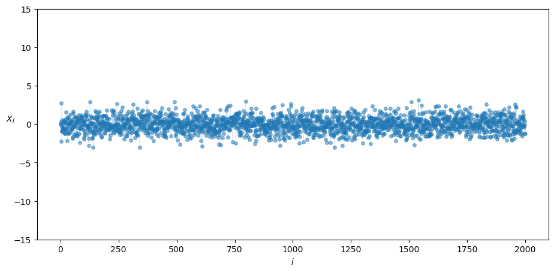
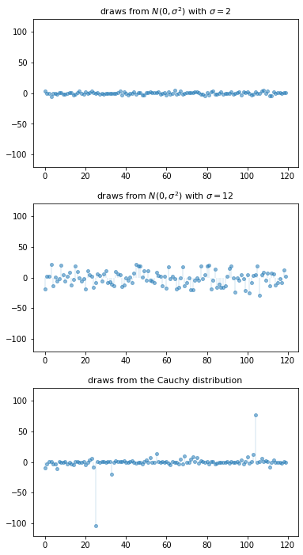
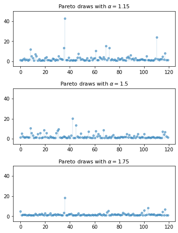
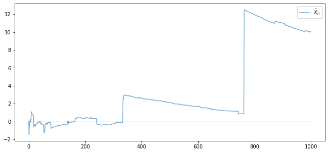
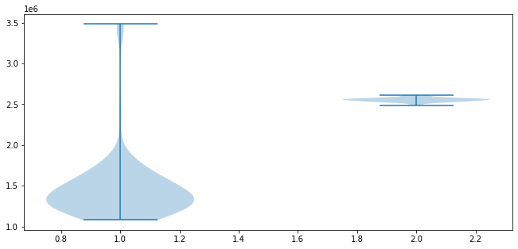

<!DOCTYPE html>

<html>
  <head>
    <meta charset="utf-8" />
    <meta name="viewport" content="width=device-width, initial-scale=1.0" />
    <title>7. Heavy-Tailed Distributions &#8212; Quantitative Economics with Python</title>
    <link rel="stylesheet" href="_static/quantecon-book-theme.css" type="text/css" />
    <link rel="stylesheet" href="_static/pygments.css" type="text/css" />
    <link rel="stylesheet" type="text/css" href="_static/togglebutton.css" />
    <link rel="stylesheet" type="text/css" href="_static/copybutton.css" />
    <link rel="stylesheet" type="text/css" href="_static/mystnb.css" />
    <link rel="stylesheet" type="text/css" href="_static/sphinx-thebe.css" />
    <link rel="stylesheet" type="text/css" href="_static/panels-main.c949a650a448cc0ae9fd3441c0e17fb0.css" />
    <link rel="stylesheet" type="text/css" href="_static/panels-variables.06eb56fa6e07937060861dad626602ad.css" />
    <script id="documentation_options" data-url_root="./" src="_static/documentation_options.js"></script>
    <script src="_static/quantecon-book-theme.js"></script>
    <script src="_static/jquery.js"></script>
    <script src="_static/underscore.js"></script>
    <script src="_static/doctools.js"></script>
    <script src="_static/language_data.js"></script>
    <script src="_static/togglebutton.js"></script>
    <script src="_static/clipboard.min.js"></script>
    <script src="_static/copybutton.js"></script>
    <script src="_static/quantecon-book-theme.js"></script>
    <script >var togglebuttonSelector = '.toggle, .admonition.dropdown, .tag_hide_input div.cell_input, .tag_hide-input div.cell_input, .tag_hide_output div.cell_output, .tag_hide-output div.cell_output, .tag_hide_cell.cell, .tag_hide-cell.cell';</script>
    <script src="_static/sphinx-book-theme.d31b09fe5c1d09cb49b26a786de4a05d.js"></script>
    <script async="async" src="https://cdnjs.cloudflare.com/ajax/libs/mathjax/2.7.7/latest.js?config=TeX-AMS-MML_HTMLorMML"></script>
    <script type="text/x-mathjax-config">MathJax.Hub.Config({"tex2jax": {"inlineMath": [["\\(", "\\)"]], "displayMath": [["\\[", "\\]"]], "processRefs": false, "processEnvironments": false}})</script>
    <script async="async" src="https://unpkg.com/thebelab@latest/lib/index.js"></script>
    <script >
        const thebe_selector = ".thebe"
        const thebe_selector_input = "pre"
        const thebe_selector_output = ".output"
    </script>
    <script async="async" src="_static/sphinx-thebe.js"></script>
    <link rel="canonical" href="https://python.quantecon.org/heavy_tails.html" />
    <link rel="shortcut icon" href="_static/lectures-favicon.ico"/>
    <link rel="index" title="Index" href="genindex.html" />
    <link rel="search" title="Search" href="search.html" />
    <link rel="next" title="8. Multivariate Normal Distribution" href="multivariate_normal.html" />
    <link rel="prev" title="6. LLN and CLT" href="lln_clt.html" />

<!-- Normal Meta Tags -->
<meta name="author" context="Thomas J. Sargent &amp; John Stachurski" />
<meta name="keywords" content="Python, QuantEcon, Quantitative Economics, Economics, Sloan, Alfred P. Sloan Foundation, Tom J. Sargent, John Stachurski" />
<meta name="description" content=This website presents a set of lectures on quantitative economic modeling, designed and written by Thomas J. Sargent and John Stachurski. />

<!-- Twitter tags -->
<meta name="twitter:card" content="summary" />
<meta name="twitter:site" content="@quantecon" />
<meta name="twitter:title" content="Heavy-Tailed Distributions"/>
<meta name="twitter:description" content="This website presents a set of lectures on quantitative economic modeling, designed and written by Thomas J. Sargent and John Stachurski.">
<meta name="twitter:creator" content="@quantecon">
<meta name="twitter:image" content="https://assets.quantecon.org/img/qe-twitter-logo.png">

<!-- Opengraph tags -->
<meta property="og:title" content="Heavy-Tailed Distributions" />
<meta property="og:type" content="website" />
<meta property="og:url" content="https://python.quantecon.org/heavy_tails.html" />
<meta property="og:image" content="https://assets.quantecon.org/img/qe-og-logo.png" />
<meta property="og:description" content="This website presents a set of lectures on quantitative economic modeling, designed and written by Thomas J. Sargent and John Stachurski." />
<meta property="og:site_name" content="Quantitative Economics with Python" />

<meta name="theme-color" content="#ffffff" />


  </head>
<body>


    <span id="top"></span>

    <div class="wrapper">

        <div class="main">

            <div class="page">

                <div class="page__toc">

                    <div class="inner">

                        
                        <div class="page__toc-header">
                            On this page
                        </div>


                        <nav id="bd-toc-nav" class="page__toc-nav">

                            <ul class="nav section-nav flex-column">
                                
                                <li class="nav-item toc-entry toc-h2">
                                    <a href="#overview" class="nav-link">Overview</a>
                                </li>
                                
                                <li class="nav-item toc-entry toc-h2">
                                    <a href="#visual-comparisons" class="nav-link">Visual Comparisons</a><ul class="nav section-nav flex-column">
                                        
                                <li class="nav-item toc-entry toc-h3">
                                    <a href="#a-simulation" class="nav-link">A Simulation</a>
                                </li>
                                
                                <li class="nav-item toc-entry toc-h3">
                                    <a href="#heavy-tails-in-asset-returns" class="nav-link">Heavy Tails in Asset Returns</a>
                                </li>
                                
                                    </ul>
                                </li>
                                
                                <li class="nav-item toc-entry toc-h2">
                                    <a href="#failure-of-the-lln" class="nav-link">Failure of the LLN</a>
                                </li>
                                
                                <li class="nav-item toc-entry toc-h2">
                                    <a href="#classifying-tail-properties" class="nav-link">Classifying Tail Properties</a><ul class="nav section-nav flex-column">
                                        
                                <li class="nav-item toc-entry toc-h3">
                                    <a href="#light-and-heavy-tails" class="nav-link">Light and Heavy Tails</a>
                                </li>
                                
                                <li class="nav-item toc-entry toc-h3">
                                    <a href="#pareto-tails" class="nav-link">Pareto Tails</a>
                                </li>
                                
                                <li class="nav-item toc-entry toc-h3">
                                    <a href="#rank-size-plots" class="nav-link">Rank-Size Plots</a>
                                </li>
                                
                                    </ul>
                                </li>
                                
                                <li class="nav-item toc-entry toc-h2">
                                    <a href="#exercises" class="nav-link">Exercises</a><ul class="nav section-nav flex-column">
                                        
                                <li class="nav-item toc-entry toc-h3">
                                    <a href="#exercise-1" class="nav-link">Exercise 1</a>
                                </li>
                                
                                <li class="nav-item toc-entry toc-h3">
                                    <a href="#exercise-2" class="nav-link">Exercise 2</a>
                                </li>
                                
                                <li class="nav-item toc-entry toc-h3">
                                    <a href="#exercise-3" class="nav-link">Exercise 3</a>
                                </li>
                                
                                <li class="nav-item toc-entry toc-h3">
                                    <a href="#exercise-4" class="nav-link">Exercise 4</a>
                                </li>
                                
                                <li class="nav-item toc-entry toc-h3">
                                    <a href="#exercise-5" class="nav-link">Exercise 5</a>
                                </li>
                                
                                    </ul>
                                </li>
                                
                                <li class="nav-item toc-entry toc-h2">
                                    <a href="#solutions" class="nav-link">Solutions</a><ul class="nav section-nav flex-column">
                                        
                                <li class="nav-item toc-entry toc-h3">
                                    <a href="#id18" class="nav-link">Exercise 1</a>
                                </li>
                                
                                <li class="nav-item toc-entry toc-h3">
                                    <a href="#id19" class="nav-link">Exercise 2</a>
                                </li>
                                
                                <li class="nav-item toc-entry toc-h3">
                                    <a href="#id20" class="nav-link">Exercise 3</a>
                                </li>
                                
                                <li class="nav-item toc-entry toc-h3">
                                    <a href="#id21" class="nav-link">Exercise 4</a>
                                </li>
                                
                                <li class="nav-item toc-entry toc-h3">
                                    <a href="#id22" class="nav-link">Exercise 5</a>
                                </li>
                                
                                    </ul>
                                </li>
                                
                            </ul>

                            <p class="logo">
                                
                                    
                                    <a href=https://quantecon.org></a>
                                    
                                
                            </p>

                            <p class="powered">Powered by <a href="https://jupyterbook.org/">Jupyter Book</a></p>

                        </nav>

                        <div class="page__toc-footer">
                            
                            
                            <p><a href="#top"><strong>Back to top</strong></a></p>
                        </div>

                    </div>

                </div>

                <div class="page__header">

                    <div class="page__header-copy">

                        <p class="page__header-heading"><a href="intro.html">Quantitative Economics with Python</a></p>

                        <p class="page__header-subheading">Heavy-Tailed Distributions</p>

                    </div>

                    <p class="page__header-authors">Thomas J. Sargent & John Stachurski</p>

                </div> <!-- .page__header -->


                
                <main class="page__content" role="main">
                    
                    <div>
                        
  <div id="qe-notebook-header" align="right" style="text-align:right;">
        <a href="https://quantecon.org/" title="quantecon.org">
                
        </a>
</div><div class="section" id="heavy-tailed-distributions">
<h1><a class="toc-backref" href="#id23"><span class="section-number">7. </span>Heavy-Tailed Distributions</a><a class="headerlink" href="#heavy-tailed-distributions" title="Permalink to this headline">¶</a></h1>
<div class="contents topic" id="contents">
<span id="index-0"></span><p class="topic-title">Contents</p>
<ul class="simple">
<li><p><a class="reference internal" href="#heavy-tailed-distributions" id="id23">Heavy-Tailed Distributions</a></p>
<ul>
<li><p><a class="reference internal" href="#overview" id="id24">Overview</a></p></li>
<li><p><a class="reference internal" href="#visual-comparisons" id="id25">Visual Comparisons</a></p></li>
<li><p><a class="reference internal" href="#failure-of-the-lln" id="id26">Failure of the LLN</a></p></li>
<li><p><a class="reference internal" href="#classifying-tail-properties" id="id27">Classifying Tail Properties</a></p></li>
<li><p><a class="reference internal" href="#exercises" id="id28">Exercises</a></p></li>
<li><p><a class="reference internal" href="#solutions" id="id29">Solutions</a></p></li>
</ul>
</li>
</ul>
</div>
<p>In addition to what’s in Anaconda, this lecture will need the following libraries:</p>
<div class="cell tag_hide-output docutils container">
<div class="cell_input docutils container">
<div class="highlight-ipython3 notranslate"><div class="highlight"><pre><span></span><span class="o">!</span>conda install -y quantecon
<span class="o">!</span>pip install --upgrade yfinance
</pre></div>
</div>
</div>
<div class="cell_output docutils container">
<div class="output stream highlight-myst-ansi notranslate"><div class="highlight"><pre><span></span>Collecting package metadata (current_repodata.json): - 
</pre></div>
</div>
<div class="output stream highlight-myst-ansi notranslate"><div class="highlight"><pre><span></span>\ 
</pre></div>
</div>
<div class="output stream highlight-myst-ansi notranslate"><div class="highlight"><pre><span></span>| 
</pre></div>
</div>
<div class="output stream highlight-myst-ansi notranslate"><div class="highlight"><pre><span></span>/ 
</pre></div>
</div>
<div class="output stream highlight-myst-ansi notranslate"><div class="highlight"><pre><span></span>- 
</pre></div>
</div>
<div class="output stream highlight-myst-ansi notranslate"><div class="highlight"><pre><span></span>\ 
</pre></div>
</div>
<div class="output stream highlight-myst-ansi notranslate"><div class="highlight"><pre><span></span>| 
</pre></div>
</div>
<div class="output stream highlight-myst-ansi notranslate"><div class="highlight"><pre><span></span>/ 
</pre></div>
</div>
<div class="output stream highlight-myst-ansi notranslate"><div class="highlight"><pre><span></span>- 
</pre></div>
</div>
<div class="output stream highlight-myst-ansi notranslate"><div class="highlight"><pre><span></span>\ 
</pre></div>
</div>
<div class="output stream highlight-myst-ansi notranslate"><div class="highlight"><pre><span></span>| 
</pre></div>
</div>
<div class="output stream highlight-myst-ansi notranslate"><div class="highlight"><pre><span></span>done
Solving environment: - 
</pre></div>
</div>
<div class="output stream highlight-myst-ansi notranslate"><div class="highlight"><pre><span></span>\ 
</pre></div>
</div>
<div class="output stream highlight-myst-ansi notranslate"><div class="highlight"><pre><span></span>| 
</pre></div>
</div>
<div class="output stream highlight-myst-ansi notranslate"><div class="highlight"><pre><span></span>/ 
</pre></div>
</div>
<div class="output stream highlight-myst-ansi notranslate"><div class="highlight"><pre><span></span>- 
</pre></div>
</div>
<div class="output stream highlight-myst-ansi notranslate"><div class="highlight"><pre><span></span>\ 
</pre></div>
</div>
<div class="output stream highlight-myst-ansi notranslate"><div class="highlight"><pre><span></span>| 
</pre></div>
</div>
<div class="output stream highlight-myst-ansi notranslate"><div class="highlight"><pre><span></span>/ 
</pre></div>
</div>
<div class="output stream highlight-myst-ansi notranslate"><div class="highlight"><pre><span></span>- 
</pre></div>
</div>
<div class="output stream highlight-myst-ansi notranslate"><div class="highlight"><pre><span></span>\ 
</pre></div>
</div>
<div class="output stream highlight-myst-ansi notranslate"><div class="highlight"><pre><span></span>| 
</pre></div>
</div>
<div class="output stream highlight-myst-ansi notranslate"><div class="highlight"><pre><span></span>/ 
</pre></div>
</div>
<div class="output stream highlight-myst-ansi notranslate"><div class="highlight"><pre><span></span>- 
</pre></div>
</div>
<div class="output stream highlight-myst-ansi notranslate"><div class="highlight"><pre><span></span>\ 
</pre></div>
</div>
<div class="output stream highlight-myst-ansi notranslate"><div class="highlight"><pre><span></span>| 
</pre></div>
</div>
<div class="output stream highlight-myst-ansi notranslate"><div class="highlight"><pre><span></span>/ 
</pre></div>
</div>
<div class="output stream highlight-myst-ansi notranslate"><div class="highlight"><pre><span></span>- 
</pre></div>
</div>
<div class="output stream highlight-myst-ansi notranslate"><div class="highlight"><pre><span></span>\ 
</pre></div>
</div>
<div class="output stream highlight-myst-ansi notranslate"><div class="highlight"><pre><span></span>| 
</pre></div>
</div>
<div class="output stream highlight-myst-ansi notranslate"><div class="highlight"><pre><span></span>/ 
</pre></div>
</div>
<div class="output stream highlight-myst-ansi notranslate"><div class="highlight"><pre><span></span>- 
</pre></div>
</div>
<div class="output stream highlight-myst-ansi notranslate"><div class="highlight"><pre><span></span>\ 
</pre></div>
</div>
<div class="output stream highlight-myst-ansi notranslate"><div class="highlight"><pre><span></span>done
</pre></div>
</div>
<div class="output stream highlight-myst-ansi notranslate"><div class="highlight"><pre><span></span># All requested packages already installed.
</pre></div>
</div>
<div class="output stream highlight-myst-ansi notranslate"><div class="highlight"><pre><span></span>Requirement already up-to-date: yfinance in /usr/share/miniconda3/envs/lecture-python/lib/python3.8/site-packages (0.1.55)
Requirement already satisfied, skipping upgrade: pandas&gt;=0.24 in /usr/share/miniconda3/envs/lecture-python/lib/python3.8/site-packages (from yfinance) (1.1.3)
Requirement already satisfied, skipping upgrade: multitasking&gt;=0.0.7 in /usr/share/miniconda3/envs/lecture-python/lib/python3.8/site-packages (from yfinance) (0.0.9)
</pre></div>
</div>
<div class="output stream highlight-myst-ansi notranslate"><div class="highlight"><pre><span></span>Requirement already satisfied, skipping upgrade: numpy&gt;=1.15 in /usr/share/miniconda3/envs/lecture-python/lib/python3.8/site-packages (from yfinance) (1.19.2)
Requirement already satisfied, skipping upgrade: lxml&gt;=4.5.1 in /usr/share/miniconda3/envs/lecture-python/lib/python3.8/site-packages (from yfinance) (4.6.1)
Requirement already satisfied, skipping upgrade: requests&gt;=2.20 in /usr/share/miniconda3/envs/lecture-python/lib/python3.8/site-packages (from yfinance) (2.24.0)
Requirement already satisfied, skipping upgrade: python-dateutil&gt;=2.7.3 in /usr/share/miniconda3/envs/lecture-python/lib/python3.8/site-packages (from pandas&gt;=0.24-&gt;yfinance) (2.8.1)
Requirement already satisfied, skipping upgrade: pytz&gt;=2017.2 in /usr/share/miniconda3/envs/lecture-python/lib/python3.8/site-packages (from pandas&gt;=0.24-&gt;yfinance) (2020.1)
Requirement already satisfied, skipping upgrade: certifi&gt;=2017.4.17 in /usr/share/miniconda3/envs/lecture-python/lib/python3.8/site-packages (from requests&gt;=2.20-&gt;yfinance) (2020.12.5)
</pre></div>
</div>
<div class="output stream highlight-myst-ansi notranslate"><div class="highlight"><pre><span></span>Requirement already satisfied, skipping upgrade: chardet&lt;4,&gt;=3.0.2 in /usr/share/miniconda3/envs/lecture-python/lib/python3.8/site-packages (from requests&gt;=2.20-&gt;yfinance) (3.0.4)
Requirement already satisfied, skipping upgrade: urllib3!=1.25.0,!=1.25.1,&lt;1.26,&gt;=1.21.1 in /usr/share/miniconda3/envs/lecture-python/lib/python3.8/site-packages (from requests&gt;=2.20-&gt;yfinance) (1.25.11)
Requirement already satisfied, skipping upgrade: idna&lt;3,&gt;=2.5 in /usr/share/miniconda3/envs/lecture-python/lib/python3.8/site-packages (from requests&gt;=2.20-&gt;yfinance) (2.10)
Requirement already satisfied, skipping upgrade: six&gt;=1.5 in /usr/share/miniconda3/envs/lecture-python/lib/python3.8/site-packages (from python-dateutil&gt;=2.7.3-&gt;pandas&gt;=0.24-&gt;yfinance) (1.15.0)
</pre></div>
</div>
</div>
</div>
<div class="section" id="overview">
<h2><a class="toc-backref" href="#id24"><span class="section-number">7.1. </span>Overview</a><a class="headerlink" href="#overview" title="Permalink to this headline">¶</a></h2>
<p>Most commonly used probability distributions in classical statistics and
the natural sciences have either bounded support or light tails.</p>
<p>When a distribution is light-tailed, extreme observations are rare and
draws tend not to deviate too much from the mean.</p>
<p>Having internalized these kinds of distributions, many researchers and
practitioners use rules of thumb such as “outcomes more than four or five
standard deviations from the mean can safely be ignored.”</p>
<p>However, some distributions encountered in economics have far more probability
mass in the tails than distributions like the normal distribution.</p>
<p>With such <strong>heavy-tailed</strong> distributions, what would be regarded as extreme
outcomes for someone accustomed to thin tailed distributions occur relatively
frequently.</p>
<p>Examples of heavy-tailed distributions observed in economic and financial
settings include</p>
<ul class="simple">
<li><p>the income distributions and the wealth distribution (see, e.g., <span id="id1">[<a class="reference internal" href="zreferences.html#id28"><span>Vil96</span></a>]</span>, <span id="id2">[<a class="reference internal" href="zreferences.html#id27"><span>BB18</span></a>]</span>),</p></li>
<li><p>the firm size distribution (<span id="id3">[<a class="reference internal" href="zreferences.html#id26"><span>Axt01</span></a>]</span>, <span id="id4">[<a class="reference internal" href="zreferences.html#id25"><span>Gab16</span></a>]</span>}),</p></li>
<li><p>the distribution of returns on holding assets over short time horizons (<span id="id5">[<a class="reference internal" href="zreferences.html#id24"><span>Man63</span></a>]</span>, <span id="id6">[<a class="reference internal" href="zreferences.html#id23"><span>Rac03</span></a>]</span>), and</p></li>
<li><p>the distribution of city sizes (<span id="id7">[<a class="reference internal" href="zreferences.html#id22"><span>RRGM11</span></a>]</span>, <span id="id8">[<a class="reference internal" href="zreferences.html#id25"><span>Gab16</span></a>]</span>).</p></li>
</ul>
<p>These heavy tails turn out to be important for our understanding of economic outcomes.</p>
<p>As one example, the heaviness of the tail in the wealth distribution is one
natural measure of inequality.</p>
<p>It matters for taxation and redistribution
policies, as well as for flow-on effects for productivity growth, business
cycles, and political economy</p>
<ul class="simple">
<li><p>see, e.g., <span id="id9">[<a class="reference internal" href="zreferences.html#id21"><span>AR02</span></a>]</span>, <span id="id10">[<a class="reference internal" href="zreferences.html#id20"><span>GSS03</span></a>]</span>, <span id="id11">[<a class="reference internal" href="zreferences.html#id19"><span>BEGS18</span></a>]</span> or <span id="id12">[<a class="reference internal" href="zreferences.html#id18"><span>AKM+18</span></a>]</span>.</p></li>
</ul>
<p>This lecture formalizes some of the concepts introduced above and reviews the
key ideas.</p>
<p>Let’s start with some imports:</p>
<div class="cell docutils container">
<div class="cell_input docutils container">
<div class="highlight-ipython3 notranslate"><div class="highlight"><pre><span></span><span class="kn">import</span> <span class="nn">numpy</span> <span class="k">as</span> <span class="nn">np</span>
<span class="kn">import</span> <span class="nn">quantecon</span> <span class="k">as</span> <span class="nn">qe</span>
<span class="kn">import</span> <span class="nn">matplotlib.pyplot</span> <span class="k">as</span> <span class="nn">plt</span>
<span class="o">%</span><span class="k">matplotlib</span> inline
</pre></div>
</div>
</div>
</div>
<p>The following two lines can be added to avoid an annoying FutureWarning, and prevent a specific compatibility issue between pandas and matplotlib from causing problems down the line:</p>
<div class="cell docutils container">
<div class="cell_input docutils container">
<div class="highlight-ipython3 notranslate"><div class="highlight"><pre><span></span><span class="kn">from</span> <span class="nn">pandas.plotting</span> <span class="kn">import</span> <span class="n">register_matplotlib_converters</span>
<span class="n">register_matplotlib_converters</span><span class="p">()</span>
</pre></div>
</div>
</div>
</div>
</div>
<div class="section" id="visual-comparisons">
<h2><a class="toc-backref" href="#id25"><span class="section-number">7.2. </span>Visual Comparisons</a><a class="headerlink" href="#visual-comparisons" title="Permalink to this headline">¶</a></h2>
<p>One way to build intuition on the difference between light and heavy tails is
to plot independent draws and compare them side-by-side.</p>
<div class="section" id="a-simulation">
<h3><span class="section-number">7.2.1. </span>A Simulation<a class="headerlink" href="#a-simulation" title="Permalink to this headline">¶</a></h3>
<p>The figure below shows a simulation.  (You will be asked to replicate it in
the exercises.)</p>
<p>The top two subfigures each show 120 independent draws from the normal distribution, which is light-tailed.</p>
<p>The bottom subfigure shows 120 independent draws from <a class="reference external" href="https://en.wikipedia.org/wiki/Cauchy_distribution">the Cauchy distribution</a>, which is heavy-tailed.</p>
<div class="figure align-default" id="light-heavy-fig1">

</div>
<p>In the top subfigure, the standard deviation of the normal distribution is 2,
and the draws are clustered around the mean.</p>
<p>In the middle subfigure, the standard deviation is increased to 12 and, as expected, the amount of dispersion rises.</p>
<p>The bottom subfigure, with the Cauchy draws, shows a
different pattern: tight clustering around the mean for the great majority of
observations, combined with a few sudden large deviations from the mean.</p>
<p>This is typical of a heavy-tailed distribution.</p>
</div>
<div class="section" id="heavy-tails-in-asset-returns">
<h3><span class="section-number">7.2.2. </span>Heavy Tails in Asset Returns<a class="headerlink" href="#heavy-tails-in-asset-returns" title="Permalink to this headline">¶</a></h3>
<p>Next let’s look at some financial data.</p>
<p>Our aim is to plot the daily change in the price of Amazon (AMZN) stock for
the period from 1st January 2015 to 1st November 2019.</p>
<p>This equates to daily returns if we set dividends aside.</p>
<p>The code below produces the desired plot using Yahoo financial data via the <code class="docutils literal notranslate"><span class="pre">yfinance</span></code> library.</p>
<div class="cell docutils container">
<div class="cell_input docutils container">
<div class="highlight-ipython3 notranslate"><div class="highlight"><pre><span></span><span class="kn">import</span> <span class="nn">yfinance</span> <span class="k">as</span> <span class="nn">yf</span>
<span class="kn">import</span> <span class="nn">pandas</span> <span class="k">as</span> <span class="nn">pd</span>

<span class="n">s</span> <span class="o">=</span> <span class="n">yf</span><span class="o">.</span><span class="n">download</span><span class="p">(</span><span class="s1">&#39;AMZN&#39;</span><span class="p">,</span> <span class="s1">&#39;2015-1-1&#39;</span><span class="p">,</span> <span class="s1">&#39;2019-11-1&#39;</span><span class="p">)[</span><span class="s1">&#39;Adj Close&#39;</span><span class="p">]</span>

<span class="n">r</span> <span class="o">=</span> <span class="n">s</span><span class="o">.</span><span class="n">pct_change</span><span class="p">()</span>

<span class="n">fig</span><span class="p">,</span> <span class="n">ax</span> <span class="o">=</span> <span class="n">plt</span><span class="o">.</span><span class="n">subplots</span><span class="p">()</span>

<span class="n">ax</span><span class="o">.</span><span class="n">plot</span><span class="p">(</span><span class="n">r</span><span class="p">,</span> <span class="n">linestyle</span><span class="o">=</span><span class="s1">&#39;&#39;</span><span class="p">,</span> <span class="n">marker</span><span class="o">=</span><span class="s1">&#39;o&#39;</span><span class="p">,</span> <span class="n">alpha</span><span class="o">=</span><span class="mf">0.5</span><span class="p">,</span> <span class="n">ms</span><span class="o">=</span><span class="mi">4</span><span class="p">)</span>
<span class="n">ax</span><span class="o">.</span><span class="n">vlines</span><span class="p">(</span><span class="n">r</span><span class="o">.</span><span class="n">index</span><span class="p">,</span> <span class="mi">0</span><span class="p">,</span> <span class="n">r</span><span class="o">.</span><span class="n">values</span><span class="p">,</span> <span class="n">lw</span><span class="o">=</span><span class="mf">0.2</span><span class="p">)</span>

<span class="n">ax</span><span class="o">.</span><span class="n">set_ylabel</span><span class="p">(</span><span class="s1">&#39;returns&#39;</span><span class="p">,</span> <span class="n">fontsize</span><span class="o">=</span><span class="mi">12</span><span class="p">)</span>
<span class="n">ax</span><span class="o">.</span><span class="n">set_xlabel</span><span class="p">(</span><span class="s1">&#39;date&#39;</span><span class="p">,</span> <span class="n">fontsize</span><span class="o">=</span><span class="mi">12</span><span class="p">)</span>

<span class="n">plt</span><span class="o">.</span><span class="n">show</span><span class="p">()</span>
</pre></div>
</div>
</div>
<div class="cell_output docutils container">
<div class="output stream highlight-myst-ansi notranslate"><div class="highlight"><pre><span></span>[*********************100%***********************]  1 of 1 completed
</pre></div>
</div>
<div class="output stream highlight-myst-ansi notranslate"><div class="highlight"><pre><span></span>
</pre></div>
</div>

</div>
</div>
<p>Five of the 1217 observations are more than 5 standard
deviations from the mean.</p>
<p>Overall, the figure is suggestive of heavy tails,
although not to the same degree as the Cauchy distribution the
figure above.</p>
<p>If, however, one takes tick-by-tick data rather
daily data, the heavy-tailedness of the distribution increases further.</p>
</div>
</div>
<div class="section" id="failure-of-the-lln">
<h2><a class="toc-backref" href="#id26"><span class="section-number">7.3. </span>Failure of the LLN</a><a class="headerlink" href="#failure-of-the-lln" title="Permalink to this headline">¶</a></h2>
<p>One impact of heavy tails is that sample averages can be poor estimators of
the underlying mean of the distribution.</p>
<p>To understand this point better, recall <a class="reference internal" href="lln_clt.html"><span class="doc">our earlier discussion</span></a> of the Law of Large Numbers, which considered IID <span class="math notranslate nohighlight">\(X_1,
\ldots, X_n\)</span> with common distribution <span class="math notranslate nohighlight">\(F\)</span></p>
<p>If <span class="math notranslate nohighlight">\(\mathbb E |X_i|\)</span> is finite, then
the sample mean <span class="math notranslate nohighlight">\(\bar X_n := \frac{1}{n} \sum_{i=1}^n X_i\)</span> satisfies</p>
<div class="math notranslate nohighlight" id="equation-lln-as2">
<span class="eqno">(7.1)<a class="headerlink" href="#equation-lln-as2" title="Permalink to this equation">¶</a></span>\[\mathbb P \left\{ \bar X_n \to \mu \text{ as } n \to \infty \right\} = 1\]</div>
<p>where <span class="math notranslate nohighlight">\(\mu := \mathbb E X_i = \int x F(x)\)</span> is the common mean of the sample.</p>
<p>The condition <span class="math notranslate nohighlight">\(\mathbb E | X_i | = \int |x| F(x) &lt; \infty\)</span> holds
in most cases but can fail if the distribution <span class="math notranslate nohighlight">\(F\)</span> is very heavy tailed.</p>
<p>For example, it fails for the Cauchy distribution.</p>
<p>Let’s have a look at the behavior of the sample mean in this case, and see
whether or not the LLN is still valid.</p>
<div class="cell docutils container">
<div class="cell_input docutils container">
<div class="highlight-ipython3 notranslate"><div class="highlight"><pre><span></span><span class="kn">from</span> <span class="nn">scipy.stats</span> <span class="kn">import</span> <span class="n">cauchy</span>

<span class="n">np</span><span class="o">.</span><span class="n">random</span><span class="o">.</span><span class="n">seed</span><span class="p">(</span><span class="mi">1234</span><span class="p">)</span>
<span class="n">N</span> <span class="o">=</span> <span class="mi">1_000</span>

<span class="n">distribution</span> <span class="o">=</span> <span class="n">cauchy</span><span class="p">()</span>

<span class="n">fig</span><span class="p">,</span> <span class="n">ax</span> <span class="o">=</span> <span class="n">plt</span><span class="o">.</span><span class="n">subplots</span><span class="p">()</span>
<span class="n">data</span> <span class="o">=</span> <span class="n">distribution</span><span class="o">.</span><span class="n">rvs</span><span class="p">(</span><span class="n">N</span><span class="p">)</span>

<span class="c1"># Compute sample mean at each n</span>
<span class="n">sample_mean</span> <span class="o">=</span> <span class="n">np</span><span class="o">.</span><span class="n">empty</span><span class="p">(</span><span class="n">N</span><span class="p">)</span>
<span class="k">for</span> <span class="n">n</span> <span class="ow">in</span> <span class="nb">range</span><span class="p">(</span><span class="mi">1</span><span class="p">,</span> <span class="n">N</span><span class="p">):</span>
    <span class="n">sample_mean</span><span class="p">[</span><span class="n">n</span><span class="p">]</span> <span class="o">=</span> <span class="n">np</span><span class="o">.</span><span class="n">mean</span><span class="p">(</span><span class="n">data</span><span class="p">[:</span><span class="n">n</span><span class="p">])</span>

<span class="c1"># Plot</span>
<span class="n">ax</span><span class="o">.</span><span class="n">plot</span><span class="p">(</span><span class="nb">range</span><span class="p">(</span><span class="n">N</span><span class="p">),</span> <span class="n">sample_mean</span><span class="p">,</span> <span class="n">alpha</span><span class="o">=</span><span class="mf">0.6</span><span class="p">,</span> <span class="n">label</span><span class="o">=</span><span class="s1">&#39;$</span><span class="se">\\</span><span class="s1">bar X_n$&#39;</span><span class="p">)</span>

<span class="n">ax</span><span class="o">.</span><span class="n">plot</span><span class="p">(</span><span class="nb">range</span><span class="p">(</span><span class="n">N</span><span class="p">),</span> <span class="n">np</span><span class="o">.</span><span class="n">zeros</span><span class="p">(</span><span class="n">N</span><span class="p">),</span> <span class="s1">&#39;k--&#39;</span><span class="p">,</span> <span class="n">lw</span><span class="o">=</span><span class="mf">0.5</span><span class="p">)</span>
<span class="n">ax</span><span class="o">.</span><span class="n">legend</span><span class="p">()</span>

<span class="n">plt</span><span class="o">.</span><span class="n">show</span><span class="p">()</span>
</pre></div>
</div>
</div>
<div class="cell_output docutils container">

</div>
</div>
<p>The sequence shows no sign of converging.</p>
<p>Will convergence occur if we take <span class="math notranslate nohighlight">\(n\)</span> even larger?</p>
<p>The answer is no.</p>
<p>To see this, recall that the <a class="reference external" href="https://en.wikipedia.org/wiki/Characteristic_function_%28probability_theory%29">characteristic function</a> of the Cauchy distribution is</p>
<div class="math notranslate nohighlight" id="equation-lln-cch">
<span class="eqno">(7.2)<a class="headerlink" href="#equation-lln-cch" title="Permalink to this equation">¶</a></span>\[\phi(t) = \mathbb E e^{itX} = \int e^{i t x} f(x) dx = e^{-|t|}\]</div>
<p>Using independence, the characteristic function of the sample mean becomes</p>
<div class="math notranslate nohighlight">
\[\begin{split}
\begin{aligned}
    \mathbb E e^{i t \bar X_n }
    &amp; = \mathbb E \exp \left\{ i \frac{t}{n} \sum_{j=1}^n X_j \right\}
    \\
    &amp; = \mathbb E \prod_{j=1}^n \exp \left\{ i \frac{t}{n} X_j \right\}
    \\
    &amp; = \prod_{j=1}^n \mathbb E \exp \left\{ i \frac{t}{n} X_j \right\}
    = [\phi(t/n)]^n
\end{aligned}
\end{split}\]</div>
<p>In view of <a class="reference internal" href="#equation-lln-cch">(7.2)</a>, this is just <span class="math notranslate nohighlight">\(e^{-|t|}\)</span>.</p>
<p>Thus, in the case of the Cauchy distribution, the sample mean itself has the very same Cauchy distribution, regardless of <span class="math notranslate nohighlight">\(n\)</span>!</p>
<p>In particular, the sequence <span class="math notranslate nohighlight">\(\bar X_n\)</span> does not converge to any point.</p>
</div>
<div class="section" id="classifying-tail-properties">
<span id="cltail"></span><h2><a class="toc-backref" href="#id27"><span class="section-number">7.4. </span>Classifying Tail Properties</a><a class="headerlink" href="#classifying-tail-properties" title="Permalink to this headline">¶</a></h2>
<p>To keep our discussion precise, we need some definitions concerning tail
properties.</p>
<p>We will focus our attention on the right hand tails of
nonnegative random variables and their distributions.</p>
<p>The definitions for
left hand tails are very similar and we omit them to simplify the exposition.</p>
<div class="section" id="light-and-heavy-tails">
<h3><span class="section-number">7.4.1. </span>Light and Heavy Tails<a class="headerlink" href="#light-and-heavy-tails" title="Permalink to this headline">¶</a></h3>
<p>A distribution <span class="math notranslate nohighlight">\(F\)</span> on <span class="math notranslate nohighlight">\(\mathbb R_+\)</span> is called <strong>heavy-tailed</strong> if</p>
<div class="math notranslate nohighlight" id="equation-defht">
<span class="eqno">(7.3)<a class="headerlink" href="#equation-defht" title="Permalink to this equation">¶</a></span>\[\int_0^\infty \exp(tx) F(dx) = \infty \; \text{ for all } t &gt; 0.\]</div>
<p>We say that a nonnegative random variable <span class="math notranslate nohighlight">\(X\)</span> is <strong>heavy-tailed</strong> if its distribution <span class="math notranslate nohighlight">\(F(x) := \mathbb P\{X \leq x\}\)</span> is heavy-tailed.</p>
<p>This is equivalent to stating that its <strong>moment generating function</strong>
<span class="math notranslate nohighlight">\(m(t) := \mathbb E \exp(t X)\)</span> is infinite for all <span class="math notranslate nohighlight">\(t &gt; 0\)</span>.</p>
<ul class="simple">
<li><p>For example, the lognormal distribution is heavy-tailed because its
moment generating function is infinite everywhere on <span class="math notranslate nohighlight">\((0, \infty)\)</span>.</p></li>
</ul>
<p>A distribution <span class="math notranslate nohighlight">\(F\)</span> on <span class="math notranslate nohighlight">\(\mathbb R_+\)</span> is called <strong>light-tailed</strong> if it is not heavy-tailed.</p>
<p>A nonnegative random variable <span class="math notranslate nohighlight">\(X\)</span> is <strong>light-tailed</strong> if its distribution <span class="math notranslate nohighlight">\(F\)</span> is light-tailed.</p>
<ul class="simple">
<li><p>Example: Every random variable with bounded support is light-tailed. (Why?)</p></li>
<li><p>Example: If <span class="math notranslate nohighlight">\(X\)</span> has the exponential distribution, with cdf <span class="math notranslate nohighlight">\(F(x) = 1 - \exp(-\lambda x)\)</span> for some <span class="math notranslate nohighlight">\(\lambda &gt; 0\)</span>, then its moment generating function is finite whenever <span class="math notranslate nohighlight">\(t &lt; \lambda\)</span>.  Hence <span class="math notranslate nohighlight">\(X\)</span> is light-tailed.</p></li>
</ul>
<p>One can show that if <span class="math notranslate nohighlight">\(X\)</span> is light-tailed, then all of its moments are finite.</p>
<p>The contrapositive is that if some moment is infinite, then <span class="math notranslate nohighlight">\(X\)</span> is heavy-tailed.</p>
<p>The latter condition is not necessary, however.</p>
<ul class="simple">
<li><p>Example: the lognormal distribution is heavy-tailed but every moment is finite.</p></li>
</ul>
</div>
<div class="section" id="pareto-tails">
<h3><span class="section-number">7.4.2. </span>Pareto Tails<a class="headerlink" href="#pareto-tails" title="Permalink to this headline">¶</a></h3>
<p>One specific class of heavy-tailed distributions has been found repeatedly in
economic and social phenomena: the class of so-called power laws.</p>
<p>Specifically, given <span class="math notranslate nohighlight">\(\alpha &gt; 0\)</span>, a nonnegative random variable <span class="math notranslate nohighlight">\(X\)</span> is said to have a <strong>Pareto tail</strong> with <strong>tail index</strong> <span class="math notranslate nohighlight">\(\alpha\)</span> if</p>
<div class="math notranslate nohighlight" id="equation-plrt">
<span class="eqno">(7.4)<a class="headerlink" href="#equation-plrt" title="Permalink to this equation">¶</a></span>\[\lim_{x \to \infty} x^\alpha \, \mathbb P\{X &gt; x\} = c.\]</div>
<p>Evidently <a class="reference internal" href="#equation-plrt">(7.4)</a> implies the existence of positive constants <span class="math notranslate nohighlight">\(b\)</span> and <span class="math notranslate nohighlight">\(\bar x\)</span> such that <span class="math notranslate nohighlight">\(\mathbb P\{X &gt; x\} \geq b x^{- \alpha}\)</span> whenever <span class="math notranslate nohighlight">\(x \geq \bar x\)</span>.</p>
<p>The implication is that <span class="math notranslate nohighlight">\(\mathbb P\{X &gt; x\}\)</span> converges to zero no faster than <span class="math notranslate nohighlight">\(x^{-\alpha}\)</span>.</p>
<p>In some sources, a random variable obeying <a class="reference internal" href="#equation-plrt">(7.4)</a> is said to have a <strong>power law tail</strong>.</p>
<p>The primary example is the <strong>Pareto distribution</strong>, which has distribution</p>
<div class="math notranslate nohighlight" id="equation-pareto">
<span class="eqno">(7.5)<a class="headerlink" href="#equation-pareto" title="Permalink to this equation">¶</a></span>\[\begin{split}F(x) =
\begin{cases}
    1 - \left( \bar x/x \right)^{\alpha}
        &amp; \text{ if } x \geq \bar x
    \\
    0
        &amp; \text{ if } x &lt; \bar x
\end{cases}\end{split}\]</div>
<p>for some positive constants <span class="math notranslate nohighlight">\(\bar x\)</span> and <span class="math notranslate nohighlight">\(\alpha\)</span>.</p>
<p>It is easy to see that if <span class="math notranslate nohighlight">\(X \sim F\)</span>, then <span class="math notranslate nohighlight">\(\mathbb P\{X &gt; x\}\)</span> satisfies <a class="reference internal" href="#equation-plrt">(7.4)</a>.</p>
<p>Thus, in line with the terminology, Pareto distributed random variables have a Pareto tail.</p>
</div>
<div class="section" id="rank-size-plots">
<h3><span class="section-number">7.4.3. </span>Rank-Size Plots<a class="headerlink" href="#rank-size-plots" title="Permalink to this headline">¶</a></h3>
<p>One graphical technique for investigating Pareto tails and power laws is the so-called <strong>rank-size plot</strong>.</p>
<p>This kind of figure plots
log size against log rank of the population (i.e., location in the population
when sorted from smallest to largest).</p>
<p>Often just the largest 5 or 10% of observations are plotted.</p>
<p>For a sufficiently large number of draws from a Pareto distribution, the plot generates a straight line. For distributions with thinner tails, the data points are concave.</p>
<p>A discussion of why this occurs can be found in <span id="id13">[<a class="reference internal" href="zreferences.html#id17"><span>NOM04</span></a>]</span>.</p>
<p>The figure below provides one example, using simulated data.</p>
<p>The rank-size plots shows draws from three different distributions: folded normal, chi-squared with 1 degree of freedom and Pareto.</p>
<p>The Pareto sample produces a straight line, while the lines produced by the other samples are concave.</p>
<p>You are asked to reproduce this figure in the exercises.</p>
<div class="figure align-default" id="rank-size-fig1">

</div>
</div>
</div>
<div class="section" id="exercises">
<h2><a class="toc-backref" href="#id28"><span class="section-number">7.5. </span>Exercises</a><a class="headerlink" href="#exercises" title="Permalink to this headline">¶</a></h2>
<div class="section" id="exercise-1">
<h3><span class="section-number">7.5.1. </span>Exercise 1<a class="headerlink" href="#exercise-1" title="Permalink to this headline">¶</a></h3>
<p>Replicate <a class="reference internal" href="#light-heavy-fig1"><span class="std std-ref">the figure presented above</span></a> that compares normal and Cauchy draws.</p>
<p>Use <code class="docutils literal notranslate"><span class="pre">np.random.seed(11)</span></code> to set the seed.</p>
</div>
<div class="section" id="exercise-2">
<h3><span class="section-number">7.5.2. </span>Exercise 2<a class="headerlink" href="#exercise-2" title="Permalink to this headline">¶</a></h3>
<p>Prove: If <span class="math notranslate nohighlight">\(X\)</span> has a Pareto tail with tail index <span class="math notranslate nohighlight">\(\alpha\)</span>, then
<span class="math notranslate nohighlight">\(\mathbb E[X^r] = \infty\)</span> for all <span class="math notranslate nohighlight">\(r \geq \alpha\)</span>.</p>
</div>
<div class="section" id="exercise-3">
<h3><span class="section-number">7.5.3. </span>Exercise 3<a class="headerlink" href="#exercise-3" title="Permalink to this headline">¶</a></h3>
<p>Repeat exercise 1, but replace the three distributions (two normal, one
Cauchy) with three Pareto distributions using different choices of
<span class="math notranslate nohighlight">\(\alpha\)</span>.</p>
<p>For <span class="math notranslate nohighlight">\(\alpha\)</span>, try 1.15, 1.5 and 1.75.</p>
<p>Use <code class="docutils literal notranslate"><span class="pre">np.random.seed(11)</span></code> to set the seed.</p>
</div>
<div class="section" id="exercise-4">
<h3><span class="section-number">7.5.4. </span>Exercise 4<a class="headerlink" href="#exercise-4" title="Permalink to this headline">¶</a></h3>
<p>Replicate the rank-size plot figure <a class="reference internal" href="#rank-size-fig1"><span class="std std-ref">presented above</span></a>.</p>
<p>If you like you can use the function <code class="docutils literal notranslate"><span class="pre">qe.rank_size</span></code> from the <code class="docutils literal notranslate"><span class="pre">quantecon</span></code> library to generate the plots.</p>
<p>Use <code class="docutils literal notranslate"><span class="pre">np.random.seed(13)</span></code> to set the seed.</p>
</div>
<div class="section" id="exercise-5">
<h3><span class="section-number">7.5.5. </span>Exercise 5<a class="headerlink" href="#exercise-5" title="Permalink to this headline">¶</a></h3>
<p>There is an ongoing argument about whether the firm size distribution should
be modeled as a Pareto distribution or a lognormal distribution (see, e.g.,
<span id="id14">[<a class="reference internal" href="zreferences.html#id11"><span>FDGA+04</span></a>]</span>, <span id="id15">[<a class="reference internal" href="zreferences.html#id9"><span>KLS18</span></a>]</span> or <span id="id16">[<a class="reference internal" href="zreferences.html#id10"><span>ST19a</span></a>]</span>).</p>
<p>This sounds esoteric but has real implications for a variety of economic
phenomena.</p>
<p>To illustrate this fact in a simple way, let us consider an economy with
100,000 firms, an interest rate of <code class="docutils literal notranslate"><span class="pre">r</span> <span class="pre">=</span> <span class="pre">0.05</span></code> and a corporate tax rate of
15%.</p>
<p>Your task is to estimate the present discounted value of projected corporate
tax revenue over the next 10 years.</p>
<p>Because we are forecasting, we need a model.</p>
<p>We will suppose that</p>
<ol class="simple">
<li><p>the number of firms and the firm size distribution (measured in profits) remain fixed and</p></li>
<li><p>the firm size distribution is either lognormal or Pareto.</p></li>
</ol>
<p>Present discounted value of tax revenue will be estimated by</p>
<ol class="simple">
<li><p>generating 100,000 draws of firm profit from the firm size distribution,</p></li>
<li><p>multiplying by the tax rate, and</p></li>
<li><p>summing the results with discounting to obtain present value.</p></li>
</ol>
<p>The Pareto distribution is assumed to take the form <a class="reference internal" href="#equation-pareto">(7.5)</a> with <span class="math notranslate nohighlight">\(\bar x = 1\)</span> and <span class="math notranslate nohighlight">\(\alpha = 1.05\)</span>.</p>
<p>(The value the tail index <span class="math notranslate nohighlight">\(\alpha\)</span> is plausible given the data <span id="id17">[<a class="reference internal" href="zreferences.html#id25"><span>Gab16</span></a>]</span>.)</p>
<p>To make the lognormal option as similar as possible to the Pareto option, choose its parameters such that the mean and median of both distributions are the same.</p>
<p>Note that, for each distribution, your estimate of tax revenue will be random because it is based on a finite number of draws.</p>
<p>To take this into account, generate 100 replications (evaluations of tax revenue) for each of the two distributions and compare the two samples by</p>
<ul class="simple">
<li><p>producing a <a class="reference external" href="https://en.wikipedia.org/wiki/Violin_plot">violin plot</a> visualizing the two samples side-by-side and</p></li>
<li><p>printing the mean and standard deviation of both samples.</p></li>
</ul>
<p>For the seed use <code class="docutils literal notranslate"><span class="pre">np.random.seed(1234)</span></code>.</p>
<p>What differences do you observe?</p>
<p>(Note: a better approach to this problem would be to model firm dynamics and
try to track individual firms given the current distribution.  We will discuss
firm dynamics in later lectures.)</p>
</div>
</div>
<div class="section" id="solutions">
<h2><a class="toc-backref" href="#id29"><span class="section-number">7.6. </span>Solutions</a><a class="headerlink" href="#solutions" title="Permalink to this headline">¶</a></h2>
<div class="section" id="id18">
<h3><span class="section-number">7.6.1. </span>Exercise 1<a class="headerlink" href="#id18" title="Permalink to this headline">¶</a></h3>
<div class="cell docutils container">
<div class="cell_input docutils container">
<div class="highlight-ipython3 notranslate"><div class="highlight"><pre><span></span><span class="n">n</span> <span class="o">=</span> <span class="mi">120</span>
<span class="n">np</span><span class="o">.</span><span class="n">random</span><span class="o">.</span><span class="n">seed</span><span class="p">(</span><span class="mi">11</span><span class="p">)</span>

<span class="n">fig</span><span class="p">,</span> <span class="n">axes</span> <span class="o">=</span> <span class="n">plt</span><span class="o">.</span><span class="n">subplots</span><span class="p">(</span><span class="mi">3</span><span class="p">,</span> <span class="mi">1</span><span class="p">,</span> <span class="n">figsize</span><span class="o">=</span><span class="p">(</span><span class="mi">6</span><span class="p">,</span> <span class="mi">12</span><span class="p">))</span>

<span class="k">for</span> <span class="n">ax</span> <span class="ow">in</span> <span class="n">axes</span><span class="p">:</span>
    <span class="n">ax</span><span class="o">.</span><span class="n">set_ylim</span><span class="p">((</span><span class="o">-</span><span class="mi">120</span><span class="p">,</span> <span class="mi">120</span><span class="p">))</span>

<span class="n">s_vals</span> <span class="o">=</span> <span class="mi">2</span><span class="p">,</span> <span class="mi">12</span>

<span class="k">for</span> <span class="n">ax</span><span class="p">,</span> <span class="n">s</span> <span class="ow">in</span> <span class="nb">zip</span><span class="p">(</span><span class="n">axes</span><span class="p">[:</span><span class="mi">2</span><span class="p">],</span> <span class="n">s_vals</span><span class="p">):</span>
    <span class="n">data</span> <span class="o">=</span> <span class="n">np</span><span class="o">.</span><span class="n">random</span><span class="o">.</span><span class="n">randn</span><span class="p">(</span><span class="n">n</span><span class="p">)</span> <span class="o">*</span> <span class="n">s</span>
    <span class="n">ax</span><span class="o">.</span><span class="n">plot</span><span class="p">(</span><span class="nb">list</span><span class="p">(</span><span class="nb">range</span><span class="p">(</span><span class="n">n</span><span class="p">)),</span> <span class="n">data</span><span class="p">,</span> <span class="n">linestyle</span><span class="o">=</span><span class="s1">&#39;&#39;</span><span class="p">,</span> <span class="n">marker</span><span class="o">=</span><span class="s1">&#39;o&#39;</span><span class="p">,</span> <span class="n">alpha</span><span class="o">=</span><span class="mf">0.5</span><span class="p">,</span> <span class="n">ms</span><span class="o">=</span><span class="mi">4</span><span class="p">)</span>
    <span class="n">ax</span><span class="o">.</span><span class="n">vlines</span><span class="p">(</span><span class="nb">list</span><span class="p">(</span><span class="nb">range</span><span class="p">(</span><span class="n">n</span><span class="p">)),</span> <span class="mi">0</span><span class="p">,</span> <span class="n">data</span><span class="p">,</span> <span class="n">lw</span><span class="o">=</span><span class="mf">0.2</span><span class="p">)</span>
    <span class="n">ax</span><span class="o">.</span><span class="n">set_title</span><span class="p">(</span><span class="sa">f</span><span class="s2">&quot;draws from $N(0, \sigma^2)$ with $\sigma = </span><span class="si">{</span><span class="n">s</span><span class="si">}</span><span class="s2">$&quot;</span><span class="p">,</span> <span class="n">fontsize</span><span class="o">=</span><span class="mi">11</span><span class="p">)</span>

<span class="n">ax</span> <span class="o">=</span> <span class="n">axes</span><span class="p">[</span><span class="mi">2</span><span class="p">]</span>
<span class="n">distribution</span> <span class="o">=</span> <span class="n">cauchy</span><span class="p">()</span>
<span class="n">data</span> <span class="o">=</span> <span class="n">distribution</span><span class="o">.</span><span class="n">rvs</span><span class="p">(</span><span class="n">n</span><span class="p">)</span>
<span class="n">ax</span><span class="o">.</span><span class="n">plot</span><span class="p">(</span><span class="nb">list</span><span class="p">(</span><span class="nb">range</span><span class="p">(</span><span class="n">n</span><span class="p">)),</span> <span class="n">data</span><span class="p">,</span> <span class="n">linestyle</span><span class="o">=</span><span class="s1">&#39;&#39;</span><span class="p">,</span> <span class="n">marker</span><span class="o">=</span><span class="s1">&#39;o&#39;</span><span class="p">,</span> <span class="n">alpha</span><span class="o">=</span><span class="mf">0.5</span><span class="p">,</span> <span class="n">ms</span><span class="o">=</span><span class="mi">4</span><span class="p">)</span>
<span class="n">ax</span><span class="o">.</span><span class="n">vlines</span><span class="p">(</span><span class="nb">list</span><span class="p">(</span><span class="nb">range</span><span class="p">(</span><span class="n">n</span><span class="p">)),</span> <span class="mi">0</span><span class="p">,</span> <span class="n">data</span><span class="p">,</span> <span class="n">lw</span><span class="o">=</span><span class="mf">0.2</span><span class="p">)</span>
<span class="n">ax</span><span class="o">.</span><span class="n">set_title</span><span class="p">(</span><span class="sa">f</span><span class="s2">&quot;draws from the Cauchy distribution&quot;</span><span class="p">,</span> <span class="n">fontsize</span><span class="o">=</span><span class="mi">11</span><span class="p">)</span>

<span class="n">plt</span><span class="o">.</span><span class="n">subplots_adjust</span><span class="p">(</span><span class="n">hspace</span><span class="o">=</span><span class="mf">0.25</span><span class="p">)</span>

<span class="n">plt</span><span class="o">.</span><span class="n">show</span><span class="p">()</span>
</pre></div>
</div>
</div>
<div class="cell_output docutils container">

</div>
</div>
</div>
<div class="section" id="id19">
<h3><span class="section-number">7.6.2. </span>Exercise 2<a class="headerlink" href="#id19" title="Permalink to this headline">¶</a></h3>
<p>Let <span class="math notranslate nohighlight">\(X\)</span> have a Pareto tail with tail index <span class="math notranslate nohighlight">\(\alpha\)</span> and let <span class="math notranslate nohighlight">\(F\)</span> be its cdf.</p>
<p>Fix <span class="math notranslate nohighlight">\(r \geq \alpha\)</span>.</p>
<p>As discussed after <a class="reference internal" href="#equation-plrt">(7.4)</a>, we can take positive constants <span class="math notranslate nohighlight">\(b\)</span> and <span class="math notranslate nohighlight">\(\bar x\)</span> such that</p>
<div class="math notranslate nohighlight">
\[
\mathbb P\{X &gt; x\} \geq b x^{- \alpha} \text{ whenever } x \geq \bar x
\]</div>
<p>But then</p>
<div class="math notranslate nohighlight">
\[
\mathbb E X^r = r \int_0^\infty x^{r-1} \mathbb P\{ X &gt; x \} x
\geq
r \int_0^{\bar x} x^{r-1} \mathbb P\{ X &gt; x \} x
+ r \int_{\bar x}^\infty  x^{r-1} b x^{-\alpha} x.
\]</div>
<p>We know that <span class="math notranslate nohighlight">\(\int_{\bar x}^\infty x^{r-\alpha-1} x = \infty\)</span> whenever <span class="math notranslate nohighlight">\(r - \alpha - 1 \geq -1\)</span>.</p>
<p>Since <span class="math notranslate nohighlight">\(r \geq \alpha\)</span>, we have <span class="math notranslate nohighlight">\(\mathbb E X^r = \infty\)</span>.</p>
</div>
<div class="section" id="id20">
<h3><span class="section-number">7.6.3. </span>Exercise 3<a class="headerlink" href="#id20" title="Permalink to this headline">¶</a></h3>
<div class="cell docutils container">
<div class="cell_input docutils container">
<div class="highlight-ipython3 notranslate"><div class="highlight"><pre><span></span><span class="kn">from</span> <span class="nn">scipy.stats</span> <span class="kn">import</span> <span class="n">pareto</span>

<span class="n">np</span><span class="o">.</span><span class="n">random</span><span class="o">.</span><span class="n">seed</span><span class="p">(</span><span class="mi">11</span><span class="p">)</span>

<span class="n">n</span> <span class="o">=</span> <span class="mi">120</span>
<span class="n">alphas</span> <span class="o">=</span> <span class="p">[</span><span class="mf">1.15</span><span class="p">,</span> <span class="mf">1.50</span><span class="p">,</span> <span class="mf">1.75</span><span class="p">]</span>

<span class="n">fig</span><span class="p">,</span> <span class="n">axes</span> <span class="o">=</span> <span class="n">plt</span><span class="o">.</span><span class="n">subplots</span><span class="p">(</span><span class="mi">3</span><span class="p">,</span> <span class="mi">1</span><span class="p">,</span> <span class="n">figsize</span><span class="o">=</span><span class="p">(</span><span class="mi">6</span><span class="p">,</span> <span class="mi">8</span><span class="p">))</span>

<span class="k">for</span> <span class="p">(</span><span class="n">a</span><span class="p">,</span> <span class="n">ax</span><span class="p">)</span> <span class="ow">in</span> <span class="nb">zip</span><span class="p">(</span><span class="n">alphas</span><span class="p">,</span> <span class="n">axes</span><span class="p">):</span>
    <span class="n">ax</span><span class="o">.</span><span class="n">set_ylim</span><span class="p">((</span><span class="o">-</span><span class="mi">5</span><span class="p">,</span> <span class="mi">50</span><span class="p">))</span>
    <span class="n">data</span> <span class="o">=</span> <span class="n">pareto</span><span class="o">.</span><span class="n">rvs</span><span class="p">(</span><span class="n">size</span><span class="o">=</span><span class="n">n</span><span class="p">,</span> <span class="n">scale</span><span class="o">=</span><span class="mi">1</span><span class="p">,</span> <span class="n">b</span><span class="o">=</span><span class="n">a</span><span class="p">)</span>
    <span class="n">ax</span><span class="o">.</span><span class="n">plot</span><span class="p">(</span><span class="nb">list</span><span class="p">(</span><span class="nb">range</span><span class="p">(</span><span class="n">n</span><span class="p">)),</span> <span class="n">data</span><span class="p">,</span> <span class="n">linestyle</span><span class="o">=</span><span class="s1">&#39;&#39;</span><span class="p">,</span> <span class="n">marker</span><span class="o">=</span><span class="s1">&#39;o&#39;</span><span class="p">,</span> <span class="n">alpha</span><span class="o">=</span><span class="mf">0.5</span><span class="p">,</span> <span class="n">ms</span><span class="o">=</span><span class="mi">4</span><span class="p">)</span>
    <span class="n">ax</span><span class="o">.</span><span class="n">vlines</span><span class="p">(</span><span class="nb">list</span><span class="p">(</span><span class="nb">range</span><span class="p">(</span><span class="n">n</span><span class="p">)),</span> <span class="mi">0</span><span class="p">,</span> <span class="n">data</span><span class="p">,</span> <span class="n">lw</span><span class="o">=</span><span class="mf">0.2</span><span class="p">)</span>
    <span class="n">ax</span><span class="o">.</span><span class="n">set_title</span><span class="p">(</span><span class="sa">f</span><span class="s2">&quot;Pareto draws with $</span><span class="se">\\</span><span class="s2">alpha = </span><span class="si">{</span><span class="n">a</span><span class="si">}</span><span class="s2">$&quot;</span><span class="p">,</span> <span class="n">fontsize</span><span class="o">=</span><span class="mi">11</span><span class="p">)</span>

<span class="n">plt</span><span class="o">.</span><span class="n">subplots_adjust</span><span class="p">(</span><span class="n">hspace</span><span class="o">=</span><span class="mf">0.4</span><span class="p">)</span>

<span class="n">plt</span><span class="o">.</span><span class="n">show</span><span class="p">()</span>
</pre></div>
</div>
</div>
<div class="cell_output docutils container">

</div>
</div>
</div>
<div class="section" id="id21">
<h3><span class="section-number">7.6.4. </span>Exercise 4<a class="headerlink" href="#id21" title="Permalink to this headline">¶</a></h3>
<p>First let’s generate the data for the plots:</p>
<div class="cell docutils container">
<div class="cell_input docutils container">
<div class="highlight-ipython3 notranslate"><div class="highlight"><pre><span></span><span class="n">sample_size</span> <span class="o">=</span> <span class="mi">1000</span>
<span class="n">np</span><span class="o">.</span><span class="n">random</span><span class="o">.</span><span class="n">seed</span><span class="p">(</span><span class="mi">13</span><span class="p">)</span>
<span class="n">z</span> <span class="o">=</span> <span class="n">np</span><span class="o">.</span><span class="n">random</span><span class="o">.</span><span class="n">randn</span><span class="p">(</span><span class="n">sample_size</span><span class="p">)</span>

<span class="n">data_1</span> <span class="o">=</span> <span class="n">np</span><span class="o">.</span><span class="n">abs</span><span class="p">(</span><span class="n">z</span><span class="p">)</span>
<span class="n">data_2</span> <span class="o">=</span> <span class="n">np</span><span class="o">.</span><span class="n">exp</span><span class="p">(</span><span class="n">z</span><span class="p">)</span>
<span class="n">data_3</span> <span class="o">=</span> <span class="n">np</span><span class="o">.</span><span class="n">exp</span><span class="p">(</span><span class="n">np</span><span class="o">.</span><span class="n">random</span><span class="o">.</span><span class="n">exponential</span><span class="p">(</span><span class="n">scale</span><span class="o">=</span><span class="mf">1.0</span><span class="p">,</span> <span class="n">size</span><span class="o">=</span><span class="n">sample_size</span><span class="p">))</span>

<span class="n">data_list</span> <span class="o">=</span> <span class="p">[</span><span class="n">data_1</span><span class="p">,</span> <span class="n">data_2</span><span class="p">,</span> <span class="n">data_3</span><span class="p">]</span>
</pre></div>
</div>
</div>
</div>
<p>Now we plot the data:</p>
<div class="cell docutils container">
<div class="cell_input docutils container">
<div class="highlight-ipython3 notranslate"><div class="highlight"><pre><span></span><span class="n">fig</span><span class="p">,</span> <span class="n">axes</span> <span class="o">=</span> <span class="n">plt</span><span class="o">.</span><span class="n">subplots</span><span class="p">(</span><span class="mi">3</span><span class="p">,</span> <span class="mi">1</span><span class="p">,</span> <span class="n">figsize</span><span class="o">=</span><span class="p">(</span><span class="mi">6</span><span class="p">,</span> <span class="mi">8</span><span class="p">))</span>
<span class="n">axes</span> <span class="o">=</span> <span class="n">axes</span><span class="o">.</span><span class="n">flatten</span><span class="p">()</span>
<span class="n">labels</span> <span class="o">=</span> <span class="p">[</span><span class="s1">&#39;$|z|$&#39;</span><span class="p">,</span> <span class="s1">&#39;$\exp(z)$&#39;</span><span class="p">,</span> <span class="s1">&#39;Pareto with tail index $1.0$&#39;</span><span class="p">]</span>

<span class="k">for</span> <span class="n">data</span><span class="p">,</span> <span class="n">label</span><span class="p">,</span> <span class="n">ax</span> <span class="ow">in</span> <span class="nb">zip</span><span class="p">(</span><span class="n">data_list</span><span class="p">,</span> <span class="n">labels</span><span class="p">,</span> <span class="n">axes</span><span class="p">):</span>

    <span class="n">rank_data</span><span class="p">,</span> <span class="n">size_data</span> <span class="o">=</span> <span class="n">qe</span><span class="o">.</span><span class="n">rank_size</span><span class="p">(</span><span class="n">data</span><span class="p">)</span>

    <span class="n">ax</span><span class="o">.</span><span class="n">loglog</span><span class="p">(</span><span class="n">rank_data</span><span class="p">,</span> <span class="n">size_data</span><span class="p">,</span> <span class="s1">&#39;o&#39;</span><span class="p">,</span> <span class="n">markersize</span><span class="o">=</span><span class="mf">3.0</span><span class="p">,</span> <span class="n">alpha</span><span class="o">=</span><span class="mf">0.5</span><span class="p">,</span> <span class="n">label</span><span class="o">=</span><span class="n">label</span><span class="p">)</span>
    <span class="n">ax</span><span class="o">.</span><span class="n">set_xlabel</span><span class="p">(</span><span class="s2">&quot;log rank&quot;</span><span class="p">)</span>
    <span class="n">ax</span><span class="o">.</span><span class="n">set_ylabel</span><span class="p">(</span><span class="s2">&quot;log size&quot;</span><span class="p">)</span>

    <span class="n">ax</span><span class="o">.</span><span class="n">legend</span><span class="p">()</span>

<span class="n">fig</span><span class="o">.</span><span class="n">subplots_adjust</span><span class="p">(</span><span class="n">hspace</span><span class="o">=</span><span class="mf">0.4</span><span class="p">)</span>

<span class="n">plt</span><span class="o">.</span><span class="n">show</span><span class="p">()</span>
</pre></div>
</div>
</div>
<div class="cell_output docutils container">

</div>
</div>
</div>
<div class="section" id="id22">
<h3><span class="section-number">7.6.5. </span>Exercise 5<a class="headerlink" href="#id22" title="Permalink to this headline">¶</a></h3>
<p>To do the exercise, we need to choose the parameters <span class="math notranslate nohighlight">\(\mu\)</span>
and <span class="math notranslate nohighlight">\(\sigma\)</span> of the lognormal distribution to match the mean and median
of the Pareto distribution.</p>
<p>Here we understand the lognormal distribution as that of the random variable
<span class="math notranslate nohighlight">\(\exp(\mu + \sigma Z)\)</span> when <span class="math notranslate nohighlight">\(Z\)</span> is standard normal.</p>
<p>The mean and median of the Pareto distribution <a class="reference internal" href="#equation-pareto">(7.5)</a> with
<span class="math notranslate nohighlight">\(\bar x = 1\)</span> are</p>
<div class="math notranslate nohighlight">
\[
\text{mean } = \frac{\alpha}{\alpha - 1}
\quad \text{and} \quad
\text{median } = 2^{1/\alpha}
\]</div>
<p>Using the corresponding expressions for the lognormal distribution leads us to
the equations</p>
<div class="math notranslate nohighlight">
\[
\frac{\alpha}{\alpha - 1} = \exp(\mu + \sigma^2/2)
\quad \text{and} \quad
2^{1/\alpha} = \exp(\mu)
\]</div>
<p>which we solve for <span class="math notranslate nohighlight">\(\mu\)</span> and <span class="math notranslate nohighlight">\(\sigma\)</span> given <span class="math notranslate nohighlight">\(\alpha = 1.05\)</span>.</p>
<p>Here is code that generates the two samples, produces the violin plot and
prints the mean and standard deviation of the two samples.</p>
<div class="cell docutils container">
<div class="cell_input docutils container">
<div class="highlight-ipython3 notranslate"><div class="highlight"><pre><span></span><span class="n">num_firms</span> <span class="o">=</span> <span class="mi">100_000</span>
<span class="n">num_years</span> <span class="o">=</span> <span class="mi">10</span>
<span class="n">tax_rate</span> <span class="o">=</span> <span class="mf">0.15</span>
<span class="n">r</span> <span class="o">=</span> <span class="mf">0.05</span>

<span class="n">β</span> <span class="o">=</span> <span class="mi">1</span> <span class="o">/</span> <span class="p">(</span><span class="mi">1</span> <span class="o">+</span> <span class="n">r</span><span class="p">)</span>    <span class="c1"># discount factor</span>

<span class="n">x_bar</span> <span class="o">=</span> <span class="mf">1.0</span>
<span class="n">α</span> <span class="o">=</span> <span class="mf">1.05</span>

<span class="k">def</span> <span class="nf">pareto_rvs</span><span class="p">(</span><span class="n">n</span><span class="p">):</span>
    <span class="s2">&quot;Uses a standard method to generate Pareto draws.&quot;</span>
    <span class="n">u</span> <span class="o">=</span> <span class="n">np</span><span class="o">.</span><span class="n">random</span><span class="o">.</span><span class="n">uniform</span><span class="p">(</span><span class="n">size</span><span class="o">=</span><span class="n">n</span><span class="p">)</span>
    <span class="n">y</span> <span class="o">=</span> <span class="n">x_bar</span> <span class="o">/</span> <span class="p">(</span><span class="n">u</span><span class="o">**</span><span class="p">(</span><span class="mi">1</span><span class="o">/</span><span class="n">α</span><span class="p">))</span>
    <span class="k">return</span> <span class="n">y</span>
</pre></div>
</div>
</div>
</div>
<p>Let’s compute the lognormal parameters:</p>
<div class="cell docutils container">
<div class="cell_input docutils container">
<div class="highlight-ipython3 notranslate"><div class="highlight"><pre><span></span><span class="n">μ</span> <span class="o">=</span> <span class="n">np</span><span class="o">.</span><span class="n">log</span><span class="p">(</span><span class="mi">2</span><span class="p">)</span> <span class="o">/</span> <span class="n">α</span>
<span class="n">σ_sq</span> <span class="o">=</span> <span class="mi">2</span> <span class="o">*</span> <span class="p">(</span><span class="n">np</span><span class="o">.</span><span class="n">log</span><span class="p">(</span><span class="n">α</span><span class="o">/</span><span class="p">(</span><span class="n">α</span> <span class="o">-</span> <span class="mi">1</span><span class="p">))</span> <span class="o">-</span> <span class="n">np</span><span class="o">.</span><span class="n">log</span><span class="p">(</span><span class="mi">2</span><span class="p">)</span><span class="o">/</span><span class="n">α</span><span class="p">)</span>
<span class="n">σ</span> <span class="o">=</span> <span class="n">np</span><span class="o">.</span><span class="n">sqrt</span><span class="p">(</span><span class="n">σ_sq</span><span class="p">)</span>
</pre></div>
</div>
</div>
</div>
<p>Here’s a function to compute a single estimate of tax revenue for a particular
choice of distribution <code class="docutils literal notranslate"><span class="pre">dist</span></code>.</p>
<div class="cell docutils container">
<div class="cell_input docutils container">
<div class="highlight-ipython3 notranslate"><div class="highlight"><pre><span></span><span class="k">def</span> <span class="nf">tax_rev</span><span class="p">(</span><span class="n">dist</span><span class="p">):</span>
    <span class="n">tax_raised</span> <span class="o">=</span> <span class="mi">0</span>
    <span class="k">for</span> <span class="n">t</span> <span class="ow">in</span> <span class="nb">range</span><span class="p">(</span><span class="n">num_years</span><span class="p">):</span>
        <span class="k">if</span> <span class="n">dist</span> <span class="o">==</span> <span class="s1">&#39;pareto&#39;</span><span class="p">:</span>
            <span class="n">π</span> <span class="o">=</span> <span class="n">pareto_rvs</span><span class="p">(</span><span class="n">num_firms</span><span class="p">)</span>
        <span class="k">else</span><span class="p">:</span>
            <span class="n">π</span> <span class="o">=</span> <span class="n">np</span><span class="o">.</span><span class="n">exp</span><span class="p">(</span><span class="n">μ</span> <span class="o">+</span> <span class="n">σ</span> <span class="o">*</span> <span class="n">np</span><span class="o">.</span><span class="n">random</span><span class="o">.</span><span class="n">randn</span><span class="p">(</span><span class="n">num_firms</span><span class="p">))</span>
        <span class="n">tax_raised</span> <span class="o">+=</span> <span class="n">β</span><span class="o">**</span><span class="n">t</span> <span class="o">*</span> <span class="n">np</span><span class="o">.</span><span class="n">sum</span><span class="p">(</span><span class="n">π</span> <span class="o">*</span> <span class="n">tax_rate</span><span class="p">)</span>
    <span class="k">return</span> <span class="n">tax_raised</span>
</pre></div>
</div>
</div>
</div>
<p>Now let’s generate the violin plot.</p>
<div class="cell docutils container">
<div class="cell_input docutils container">
<div class="highlight-ipython3 notranslate"><div class="highlight"><pre><span></span><span class="n">num_reps</span> <span class="o">=</span> <span class="mi">100</span>
<span class="n">np</span><span class="o">.</span><span class="n">random</span><span class="o">.</span><span class="n">seed</span><span class="p">(</span><span class="mi">1234</span><span class="p">)</span>

<span class="n">tax_rev_lognorm</span> <span class="o">=</span> <span class="n">np</span><span class="o">.</span><span class="n">empty</span><span class="p">(</span><span class="n">num_reps</span><span class="p">)</span>
<span class="n">tax_rev_pareto</span> <span class="o">=</span> <span class="n">np</span><span class="o">.</span><span class="n">empty</span><span class="p">(</span><span class="n">num_reps</span><span class="p">)</span>

<span class="k">for</span> <span class="n">i</span> <span class="ow">in</span> <span class="nb">range</span><span class="p">(</span><span class="n">num_reps</span><span class="p">):</span>
    <span class="n">tax_rev_pareto</span><span class="p">[</span><span class="n">i</span><span class="p">]</span> <span class="o">=</span> <span class="n">tax_rev</span><span class="p">(</span><span class="s1">&#39;pareto&#39;</span><span class="p">)</span>
    <span class="n">tax_rev_lognorm</span><span class="p">[</span><span class="n">i</span><span class="p">]</span> <span class="o">=</span> <span class="n">tax_rev</span><span class="p">(</span><span class="s1">&#39;lognorm&#39;</span><span class="p">)</span>

<span class="n">fig</span><span class="p">,</span> <span class="n">ax</span> <span class="o">=</span> <span class="n">plt</span><span class="o">.</span><span class="n">subplots</span><span class="p">()</span>

<span class="n">data</span> <span class="o">=</span> <span class="n">tax_rev_pareto</span><span class="p">,</span> <span class="n">tax_rev_lognorm</span>

<span class="n">ax</span><span class="o">.</span><span class="n">violinplot</span><span class="p">(</span><span class="n">data</span><span class="p">)</span>

<span class="n">plt</span><span class="o">.</span><span class="n">show</span><span class="p">()</span>
</pre></div>
</div>
</div>
<div class="cell_output docutils container">

</div>
</div>
<p>Finally, let’s print the means and standard deviations.</p>
<div class="cell docutils container">
<div class="cell_input docutils container">
<div class="highlight-ipython3 notranslate"><div class="highlight"><pre><span></span><span class="n">tax_rev_pareto</span><span class="o">.</span><span class="n">mean</span><span class="p">(),</span> <span class="n">tax_rev_pareto</span><span class="o">.</span><span class="n">std</span><span class="p">()</span>
</pre></div>
</div>
</div>
<div class="cell_output docutils container">
<div class="output text_plain highlight-myst-ansi notranslate"><div class="highlight"><pre><span></span>(1458729.0546623734, 406089.3613661567)
</pre></div>
</div>
</div>
</div>
<div class="cell docutils container">
<div class="cell_input docutils container">
<div class="highlight-ipython3 notranslate"><div class="highlight"><pre><span></span><span class="n">tax_rev_lognorm</span><span class="o">.</span><span class="n">mean</span><span class="p">(),</span> <span class="n">tax_rev_lognorm</span><span class="o">.</span><span class="n">std</span><span class="p">()</span>
</pre></div>
</div>
</div>
<div class="cell_output docutils container">
<div class="output text_plain highlight-myst-ansi notranslate"><div class="highlight"><pre><span></span>(2556174.8615230713, 25586.44456513965)
</pre></div>
</div>
</div>
</div>
<p>Looking at the output of the code, our main conclusion is that the Pareto
assumption leads to a lower mean and greater dispersion.</p>
</div>
</div>
</div>

    <script type="text/x-thebe-config">
    {
        requestKernel: true,
        binderOptions: {
            repo: "binder-examples/jupyter-stacks-datascience",
            ref: "master",
        },
        codeMirrorConfig: {
            theme: "abcdef",
            mode: "python"
        },
        kernelOptions: {
            kernelName: "python3",
            path: "./."
        },
        predefinedOutput: true
    }
    </script>
    <script>kernelName = 'python3'</script>

                    </div>
                    
                </main> <!-- .page__content -->
                


                <footer class="page__footer">

                    <p><a href="https://creativecommons.org/licenses/by-sa/4.0/"></a></p>

                    <p>Creative Commons License &ndash; This work is licensed under a Creative Commons Attribution-ShareAlike 4.0 International.</p>

                </footer> <!-- .page__footer -->

            </div> <!-- .page -->

            
            <div class="sidebar bd-sidebar inactive" id="site-navigation">

                <div class="sidebar__header">


                    Contents

                </div>

                <nav class="sidebar__nav" id="sidebar-nav" aria-label="Main navigation">
                    <p class="caption">
 <span class="caption-text">
  Tools and Techniques
 </span>
</p>
<ul class="current nav sidenav_l1">
 <li class="toctree-l1">
  <a class="reference internal" href="geom_series.html">
   1. Geometric Series for Elementary Economics
  </a>
 </li>
 <li class="toctree-l1">
  <a class="reference internal" href="multi_hyper.html">
   2. Multivariate Hypergeometric Distribution
  </a>
 </li>
 <li class="toctree-l1">
  <a class="reference internal" href="sir_model.html">
   3. Modeling COVID 19
  </a>
 </li>
 <li class="toctree-l1">
  <a class="reference internal" href="linear_algebra.html">
   4. Linear Algebra
  </a>
 </li>
 <li class="toctree-l1">
  <a class="reference internal" href="complex_and_trig.html">
   5. Complex Numbers and Trigonometry
  </a>
 </li>
 <li class="toctree-l1">
  <a class="reference internal" href="lln_clt.html">
   6. LLN and CLT
  </a>
 </li>
 <li class="toctree-l1 current active">
  <a class="current reference internal" href="#">
   7. Heavy-Tailed Distributions
  </a>
 </li>
 <li class="toctree-l1">
  <a class="reference internal" href="multivariate_normal.html">
   8. Multivariate Normal Distribution
  </a>
 </li>
 <li class="toctree-l1">
  <a class="reference internal" href="time_series_with_matrices.html">
   9. Univariate Time Series with Matrix Algebra
  </a>
 </li>
</ul>
<p class="caption">
 <span class="caption-text">
  Introduction to Dynamics
 </span>
</p>
<ul class="nav sidenav_l1">
 <li class="toctree-l1">
  <a class="reference internal" href="scalar_dynam.html">
   10. Dynamics in One Dimension
  </a>
 </li>
 <li class="toctree-l1">
  <a class="reference internal" href="ar1_processes.html">
   11. AR1 Processes
  </a>
 </li>
 <li class="toctree-l1">
  <a class="reference internal" href="finite_markov.html">
   12. Finite Markov Chains
  </a>
 </li>
 <li class="toctree-l1">
  <a class="reference internal" href="inventory_dynamics.html">
   13. Inventory Dynamics
  </a>
 </li>
 <li class="toctree-l1">
  <a class="reference internal" href="linear_models.html">
   14. Linear State Space Models
  </a>
 </li>
 <li class="toctree-l1">
  <a class="reference internal" href="samuelson.html">
   15. Application: The Samuelson Multiplier-Accelerator
  </a>
 </li>
 <li class="toctree-l1">
  <a class="reference internal" href="kesten_processes.html">
   16. Kesten Processes and Firm Dynamics
  </a>
 </li>
 <li class="toctree-l1">
  <a class="reference internal" href="wealth_dynamics.html">
   17. Wealth Distribution Dynamics
  </a>
 </li>
 <li class="toctree-l1">
  <a class="reference internal" href="kalman.html">
   18. A First Look at the Kalman Filter
  </a>
 </li>
 <li class="toctree-l1">
  <a class="reference internal" href="short_path.html">
   19. Shortest Paths
  </a>
 </li>
 <li class="toctree-l1">
  <a class="reference internal" href="cass_koopmans_1.html">
   20. Cass-Koopmans Planning Problem
  </a>
 </li>
 <li class="toctree-l1">
  <a class="reference internal" href="cass_koopmans_2.html">
   21. Cass-Koopmans Competitive Equilibrium
  </a>
 </li>
</ul>
<p class="caption">
 <span class="caption-text">
  Search
 </span>
</p>
<ul class="nav sidenav_l1">
 <li class="toctree-l1">
  <a class="reference internal" href="mccall_model.html">
   22. Job Search I: The McCall Search Model
  </a>
 </li>
 <li class="toctree-l1">
  <a class="reference internal" href="mccall_model_with_separation.html">
   23. Job Search II: Search and Separation
  </a>
 </li>
 <li class="toctree-l1">
  <a class="reference internal" href="mccall_fitted_vfi.html">
   24. Job Search III: Fitted Value Function Iteration
  </a>
 </li>
 <li class="toctree-l1">
  <a class="reference internal" href="mccall_correlated.html">
   25. Job Search IV: Correlated Wage Offers
  </a>
 </li>
 <li class="toctree-l1">
  <a class="reference internal" href="career.html">
   26. Job Search V: Modeling Career Choice
  </a>
 </li>
 <li class="toctree-l1">
  <a class="reference internal" href="jv.html">
   27. Job Search VI: On-the-Job Search
  </a>
 </li>
</ul>
<p class="caption">
 <span class="caption-text">
  Consumption, Savings and Growth
 </span>
</p>
<ul class="nav sidenav_l1">
 <li class="toctree-l1">
  <a class="reference internal" href="cake_eating_problem.html">
   28. Cake Eating I: Introduction to Optimal Saving
  </a>
 </li>
 <li class="toctree-l1">
  <a class="reference internal" href="cake_eating_numerical.html">
   29. Cake Eating II: Numerical Methods
  </a>
 </li>
 <li class="toctree-l1">
  <a class="reference internal" href="optgrowth.html">
   30. Optimal Growth I: The Stochastic Optimal Growth Model
  </a>
 </li>
 <li class="toctree-l1">
  <a class="reference internal" href="optgrowth_fast.html">
   31. Optimal Growth II: Accelerating the Code with Numba
  </a>
 </li>
 <li class="toctree-l1">
  <a class="reference internal" href="coleman_policy_iter.html">
   32. Optimal Growth III: Time Iteration
  </a>
 </li>
 <li class="toctree-l1">
  <a class="reference internal" href="egm_policy_iter.html">
   33. Optimal Growth IV: The Endogenous Grid Method
  </a>
 </li>
 <li class="toctree-l1">
  <a class="reference internal" href="ifp.html">
   34. The Income Fluctuation Problem I: Basic Model
  </a>
 </li>
 <li class="toctree-l1">
  <a class="reference internal" href="ifp_advanced.html">
   35. The Income Fluctuation Problem II: Stochastic Returns on Assets
  </a>
 </li>
</ul>
<p class="caption">
 <span class="caption-text">
  Information
 </span>
</p>
<ul class="nav sidenav_l1">
 <li class="toctree-l1">
  <a class="reference internal" href="odu.html">
   36. Job Search VII: Search with Learning
  </a>
 </li>
 <li class="toctree-l1">
  <a class="reference internal" href="likelihood_ratio_process.html">
   37. Likelihood Ratio Processes
  </a>
 </li>
 <li class="toctree-l1">
  <a class="reference internal" href="wald_friedman.html">
   38. A Problem that Stumped Milton Friedman
  </a>
 </li>
 <li class="toctree-l1">
  <a class="reference internal" href="exchangeable.html">
   39. Exchangeability and Bayesian Updating
  </a>
 </li>
 <li class="toctree-l1">
  <a class="reference internal" href="likelihood_bayes.html">
   40. Likelihood Ratio Processes and Bayesian Learning
  </a>
 </li>
 <li class="toctree-l1">
  <a class="reference internal" href="navy_captain.html">
   41. Bayesian versus Frequentist Decision Rules
  </a>
 </li>
</ul>
<p class="caption">
 <span class="caption-text">
  LQ Control
 </span>
</p>
<ul class="nav sidenav_l1">
 <li class="toctree-l1">
  <a class="reference internal" href="lqcontrol.html">
   42. LQ Control: Foundations
  </a>
 </li>
 <li class="toctree-l1">
  <a class="reference internal" href="perm_income.html">
   43. The Permanent Income Model
  </a>
 </li>
 <li class="toctree-l1">
  <a class="reference internal" href="perm_income_cons.html">
   44. Permanent Income II: LQ Techniques
  </a>
 </li>
 <li class="toctree-l1">
  <a class="reference internal" href="lq_inventories.html">
   45. Production Smoothing via Inventories
  </a>
 </li>
</ul>
<p class="caption">
 <span class="caption-text">
  Multiple Agent Models
 </span>
</p>
<ul class="nav sidenav_l1">
 <li class="toctree-l1">
  <a class="reference internal" href="schelling.html">
   46. Schelling’s Segregation Model
  </a>
 </li>
 <li class="toctree-l1">
  <a class="reference internal" href="lake_model.html">
   47. A Lake Model of Employment and Unemployment
  </a>
 </li>
 <li class="toctree-l1">
  <a class="reference internal" href="rational_expectations.html">
   48. Rational Expectations Equilibrium
  </a>
 </li>
 <li class="toctree-l1">
  <a class="reference internal" href="re_with_feedback.html">
   49. Stability in Linear Rational Expectations Models
  </a>
 </li>
 <li class="toctree-l1">
  <a class="reference internal" href="markov_perf.html">
   50. Markov Perfect Equilibrium
  </a>
 </li>
 <li class="toctree-l1">
  <a class="reference internal" href="uncertainty_traps.html">
   51. Uncertainty Traps
  </a>
 </li>
 <li class="toctree-l1">
  <a class="reference internal" href="aiyagari.html">
   52. The Aiyagari Model
  </a>
 </li>
</ul>
<p class="caption">
 <span class="caption-text">
  Asset Pricing and Finance
 </span>
</p>
<ul class="nav sidenav_l1">
 <li class="toctree-l1">
  <a class="reference internal" href="markov_asset.html">
   53. Asset Pricing: Finite State Models
  </a>
 </li>
 <li class="toctree-l1">
  <a class="reference internal" href="harrison_kreps.html">
   54. Asset Pricing with Incomplete Markets
  </a>
 </li>
</ul>
<p class="caption">
 <span class="caption-text">
  Data and Empirics
 </span>
</p>
<ul class="nav sidenav_l1">
 <li class="toctree-l1">
  <a class="reference internal" href="pandas_panel.html">
   55. Pandas for Panel Data
  </a>
 </li>
 <li class="toctree-l1">
  <a class="reference internal" href="ols.html">
   56. Linear Regression in Python
  </a>
 </li>
 <li class="toctree-l1">
  <a class="reference internal" href="mle.html">
   57. Maximum Likelihood Estimation
  </a>
 </li>
</ul>
<p class="caption">
 <span class="caption-text">
  Other
 </span>
</p>
<ul class="nav sidenav_l1">
 <li class="toctree-l1">
  <a class="reference internal" href="troubleshooting.html">
   58. Troubleshooting
  </a>
 </li>
 <li class="toctree-l1">
  <a class="reference internal" href="zreferences.html">
   59. References
  </a>
 </li>
</ul>

                </nav>

                <div class="sidebar__footer">

                </div>

            </div> <!-- .sidebar -->
            
        </div> <!-- .main -->

        <div class="toolbar">

            <div class="toolbar__inner">

                <ul class="toolbar__main">
                    <li data-tippy-content="Table of Contents" class="btn__sidebar"><i data-feather="menu"></i></li>
                    <li data-tippy-content="Home"><a href="intro.html"><i data-feather="home"></i></a></li>
                    <li class="btn__qelogo"><a href="https://quantecon.org" title=""><span class="show-for-sr">QuantEcon</span></a></li>
                    <!-- <li class="btn__search">
                        <form action="search.html" method="get">
                            <input type="search" class="form-control" name="q" id="search-input" placeholder="Search the docs ..." aria-label="Search the docs ..." autocomplete="off">
                            <i data-feather="search"></i>
                        </form>
                    </li> -->
                </ul>

                <ul class="toolbar__links">
                    <li data-tippy-content="Fullscreen" class="btn__fullscreen"><i data-feather="maximize"></i></li>
                    <li data-tippy-content="Increase font size" class="btn__plus"><i data-feather="plus-circle"></i></li>
                    <li data-tippy-content="Decrease font size" class="btn__minus"><i data-feather="minus-circle"></i></li>
                    <li data-tippy-content="Change contrast" class="btn__contrast"><i data-feather="sunset"></i></li>
                    <li data-tippy-content="Download Notebook"><a href="_notebooks/heavy_tails.ipynb" download><i data-feather="download-cloud"></i></a></li>
                    <li data-tippy-content="Launch Notebook"><a href="https://mybinder.org/v2/gh/QuantEcon/lecture-python.notebooks/master?urlpath=tree/heavy_tails.ipynb" target="_blank"><i data-feather="play-circle"></i></a></li>
                    <li data-tippy-content="Download PDF" onClick="window.print()"><i data-feather="file"></i></li>
                    <li data-tippy-content="View Source"><a target="_blank" href="https://github.com/QuantEcon/lecture-python.myst/tree/master/lectures/heavy_tails.md" download><i data-feather="github"></i></a></li>
                </ul>

            </div>


        </div> <!-- .toolbar -->

    </div> <!-- .wrapper-->

<script src="_static/plugins.js"></script>
<script src="https://cdnjs.cloudflare.com/ajax/libs/mathjax/2.7.1/MathJax.js?config=TeX-AMS-MML_HTMLorMML"></script>

<script src="https://unpkg.com/@popperjs/core@2"></script>
<script src="https://unpkg.com/tippy.js@6"></script>


    <script src=[></script>

    <script src=]></script>

<script src="_static/scripts.js"></script>
<script>
    feather.replace()
    tippy('[data-tippy-content]');
</script>


  </body>
</html>